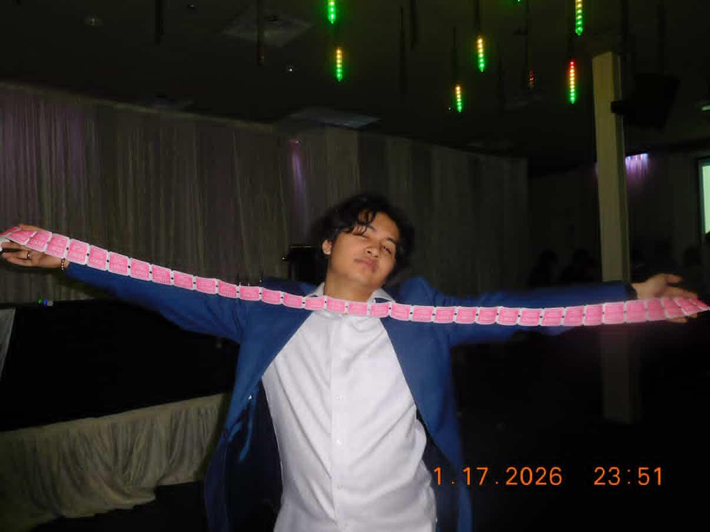

Computer Engineer · Edmonton, AB
|
I build where circuits meet code — firmware, embedded systems, hardware that actually does something. Computer Engineering grad, June 2026.

Computer Engineer · Edmonton, AB
I build where circuits meet code — firmware, embedded systems, hardware that actually does something. Computer Engineering grad, June 2026.
I'm a Computer Engineer from the University of Alberta, graduating June 2026. I gravitate toward work that's hands-on and grounded — firmware, embedded systems, hardware that actually does something in the world. Currently VP Academics at the Computer Engineering Club.
Outside of engineering I play piano and make music with my family, watch too much anime — the GitHub handle gives it away — and believe a good dad joke can get you through almost anything...almost.

Non-invasive elder care monitoring system for aging-in-place safety. Three subsystems — stove detection, water usage, and appliance monitoring — all running edge ML on Raspberry Pi Pico 2W microcontrollers with a full AWS IoT cloud pipeline and caregiver mobile app.
Full anomaly detection pipeline using statistical, distance-based (k-NN, DBSCAN), and ML (One-Class SVM) techniques. Evaluated via precision, recall, F1-score, and ROC/PR curves. Documented end-to-end in a reproducible Jupyter notebook.
Designed and implemented a 16-bit CPU from scratch on a Xilinx Zybo Z7 FPGA. Full controller-datapath architecture with ALU, register file, and an FSM executing 13 custom instructions including a bitwise multiplier.
Android app implementing a fair lottery-based signup system for high-demand events. Real-time Firebase backend with local notifications, deep linking, and full OOP design with UML and JUnit testing.
Client-server file sharing app in C using custom TCP/UDP socket protocols and nonblocking I/O to handle multiple concurrent connections with enforced packet formats and proper error handling.
Embedded human-machine interface using a mechanical quadrature encoder and WS2812B RGB LED ring on the RP2040. Implemented a Russian roulette-inspired game with real-time LED animations driven by encoder rotation and button input.
Open-loop DC motor controller using PWM and ADC on the RP2040. Potentiometer sets speed and direction via H-bridge driver, with a tachometer-style RGB LED ring animation responding in real time. Prototyped in Wokwi first.
Wake-word controlled DC fan using on-device ML on the RP2040. INMP441 microphone captured audio via I2S, processed by a TensorFlow Lite model to detect "yes" and "no" commands — fan on, fan off, no internet needed.
Tinder-style restaurant picker for groups — join via QR or link, filter by cuisine and radius, swipe on spots, and a ranked voting algorithm surfaces the highest-consensus pick in real time.
A custom-built BMO from Adventure Time — 3D printed enclosure, embedded hardware inside, and firmware to bring it to life. Schematics, print files, and build log coming as it progresses.